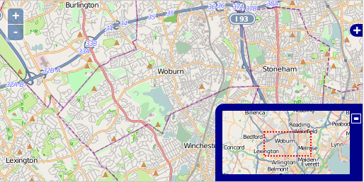
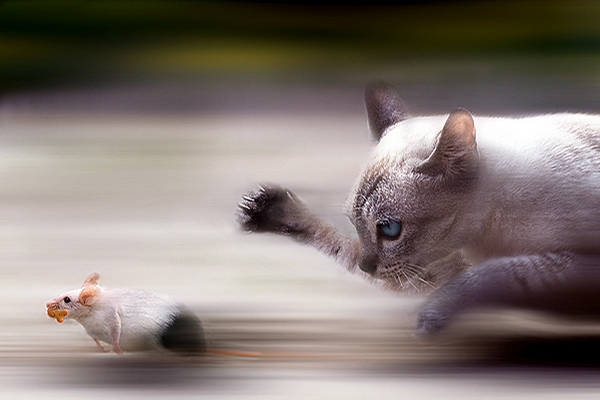

The Rebirth of Cool
OpenLayers
- Tim Schaub (OpenGeo)
- Eric Lemoine (Camptocamp)
What's new?
(and some old stuff you should know about too)
We've moved!

Increase in commits

commits
Increase in contributors

contributors
Mobile

New features

Tile transitions
(and don't forget the new zoom control)
Ongoing stuff, and ideas for the future
Improved UI/UX

On par with the new Zoom control
- Look & feel
- Accessibility
- CSS styling
Zoom Animation
Improved APIs
Previously:
var map = new OpenLayers.Map("map", {
projection: new OpenLayers.Projection(
"EPSG:900913"
),
maxExtent: new OpenLayers.Bounds(
-20037508, -20037508,
20037508, 20037508
),
maxResolution: 156543.0339,
units: "m"
});
map.setCenter(new OpenLayers.LonLat(0, 0), 1);
Improved APIs
Now:
var map = new OpenLayers.Map({
div: "map",
projection: "EPSG:900913",
center: [0, 0],
zoom: 1
});
Simplified constructors plus sensible defaults.
The OpenLayers APIs have improved. But we can continue making improvements (e.g. CRS aware location and bounds).
Internal Improvements

Performance optimizations
- Use
requestAnimationFrame for animations (when available)
- Tile queues for abortable tile requests
- Back buffer overhaul
More usability improvements

- Website overhaul
- More/better prose docs
- Improved API docs
- Organized examples
- Hosted build tool
Future features

Ongoing discussion about Canvas 2D, WebGL, and more.